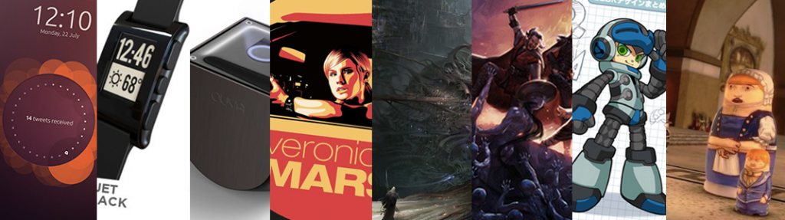

Here are the most successful crowdfunding campaigns, as of today Oct 28th 2013:
- the Ubuntu Edge campaign raised $12.8 million, for a smartphone and desktop PC in one, powered by Ubuntu
- the Pebble Watch raised $10.2 million, for a watch connected to your smartphone, able to show notifications
- Ouya raised $8.6 million, for a video game console built on Android
- the Veronica Mars movie project raised $5.7 million, to finance a Veronica Mars feature
- Torment : Tides of Numenera raised $4.1 million, for an RPG video game
- Project Eternity raised $3.9 million, for an RPG video game
- Mighty N9 raised $3.8 million, for a classic side-scrolling japanese action game
- Reaper Miniatures raised Bones raised $3.4 million, for a table-top game, where you could get high-quality plastic models
- Double Fine Adventure raised $3.3 million for a classic video game adventure.
- Zach Braf raised $3.1 million for the “Wish I was here” movie project.
Note: The list above was taken from public data from Kickstarter and Indiegogo, as well as selfstarter and other leading crowdfunding websites. It does not take into account equity crowdfunding campaigns.

Here’s what we can deduce from the top 10 most successful crowdfunding campaigns:
- They all promise a tangible copy of the final product, in one way or another. There are no free products, no early beta access. Also, even if technology projects are popular, there are no software projects that are on the list. That allows project creators to offer a copy of the product around $15 to $25, and then offer other rewards such as experience (a visit of the studio) or an acknowledgment (such as a public thank-you for backing the project)
- To add to this, all projects were in development stage and could show a very real product that you can see yourself using. There were no projects still in brainstorming/design phase, and there were no projects with products already available on the market.
- Exceptions to the above rule are the Veronica Mars, Mighty N9, and the Zach Braf movie, which benefited from press and blog coverage due to the high-profile stars that were on-board the project.
- Kickstarter leads the way: in the list above, 9 projects out of 10 were on Kickstarter. The top project was launched on Indiegogo and go to $12.8 millions, but didn’t reach its final goal. We can conclude that Kickstarter is the platform you should target absolutely
- Video games and games in general are very popular, followed by technology, and then cinema.
- All projects are creative, with unique design, presentation, vision that makes it impossible to find a similar project on the market. Indeed, it’s not about doing something popular, but offering something different. All projects went also the extra mile by having a uniquely designed page, with original graphics and concept art.
- Entertaining and well-produced video. Double Fine Adventure’s Kickstarter video is a reference for crowdfunding videos, with a good mix of humor, charm, and story-telling. The other 9 campaigns are also very good reference, with product showcase, a few words from the founders, and shots showing how the product is used
- All projects already had a well established community, because of previous projects, or because they took 6 to 9 months previous to the Kickstarter to reach out to the community and build a community. They either started with a very large mailing-list, a very strong fanbase through a Facebook page, or in the case of video games, large forums where video games fans put a lot of time. Think engagement before crowdfunding!
What do you think? Would those help you in your crowdfunding campaign? Comment below or send an email to heri@seedingfactory.com to discuss